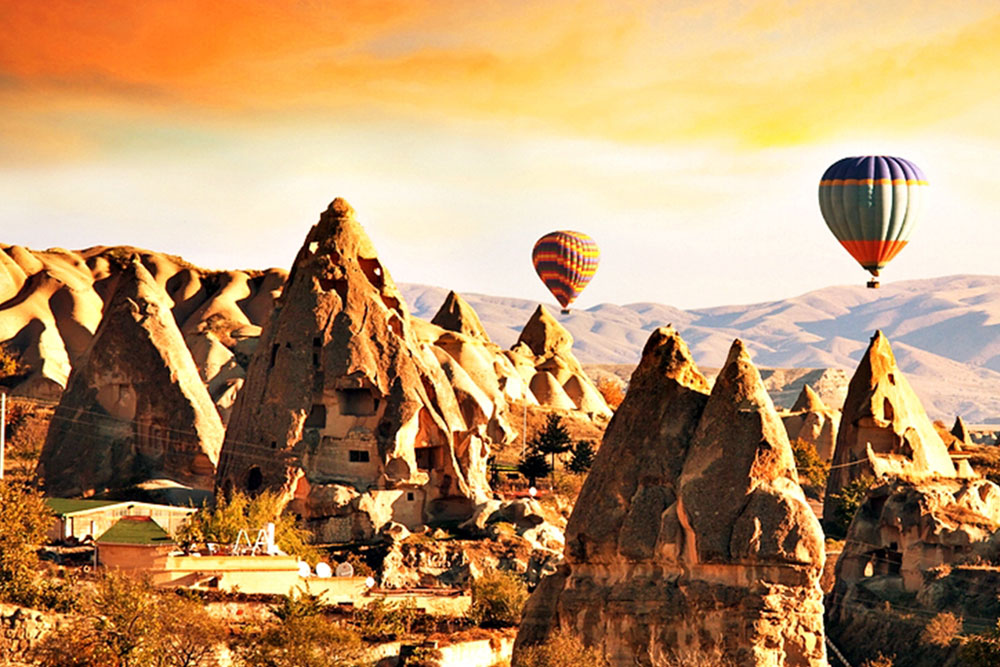

ÜYE OL
GİRİŞ YAP
...
KAPADOKYA
Kapadokya bölgesi, doğa ve tarihin dünyada en güzel bütünleştiği yerdir. Coğrafik olaylar Peribacaları'nı oluştururken, tarihi süreçte, insanlar da, bu peribacalarının içlerine ev, kilise oymuş, bunları fresklerle süsleyerek, binlerce yıllık yaşlı medeniyetlerin izlerini günümüze taşımıştır.
Roma İmparatoru Augustus zamanında Antik Dönem yazarlarından Strabon 17 kitaplık 'Geographika' adlı kitabında (Anadolu XII,XIII,XIV) Kapadokya Bölgesi'nin sınırlarını güneyde Toros Dağları, batıda Aksaray, doğuda Malatya ve kuzeyde Doğu Karadeniz kıyılarına kadar uzanan geniş bir bölge olarak belirtir.
Bu günkü Kapadokya Bölgesi Nevşehir,Aksaray, Niğde, Kayseri ve Kırşehir illerinin kapladığı alandır. Daha dar bir alan olan kayalık Kapadokya Bölgesi ise Uçhisar, Ürgüp, Avanos, Göreme, Derinkuyu, Kaymaklı, Ihlara ve çevresinden ibarettir
Kayalara oyulmuş geleneksek Kapadokya evleri ve güvercinlikler yörenin özgünlüğünü dile getirirler. Bu evler 19. yüzyılda yamaçlara ya kayaların yada kesme taştan inşa edilmişlerdir.Bölgenin tek mimarı malzemesi olan taş yörenin volkanik yapısından dolayı ocaktan çıktıktan sonra yumuşak olduğundan çok rahat işlenebilmekte ancak hava ile temas ettikten sonra sertleşerek çok dayanaklı bir yapı malzemesine dönüşmektedir.Kullanılan malzemenin bol olması ve kolay işlenebilmesinden dolayı yöreye has olan taş işçiliği gelişerek mimari bir gelenek halini almıştır. Gerek avlu gerekse ev kapılarının malzemesi ahşaptır.
Kemerli olarak yapılmış kapıların üst kısmı stilize sarmaşık veya rozet motifleriyle süslenmiştir.Yöredeki güvercinlikler 19. yüzyılın sonları, 18. yüzyılda yapılmış küçük yapılardır. İslam resim sanatını göstermek açısından önemli olan güvercinliklerin bir kısmı manastır veya kilise olarak inşa edilmişlerdir. Güvercinliklerin yüzeyi yöresel sanatçılar tarafından zengin bir bezemeler, kitabeler ile süslenmişlerdir.
Erozyonun oluşturduğu Peri Bacaları ve inanılmaz görüntülerle herkesi şaşırtan vadileri insanların inanç uğruna oyarak inşa ettikleri ve günümüze kadar canlılığını koruyabilmiş freskleriyle kaya kiliseleri canlarını kurtarabilmek amacıyla yerin metrelerce altını -kimi zaman sekiz kat- oyarak yeraltı yerleşim yerleri bugünkü Kapadokya'yı meydana getirir. İnsan ve doğa el ele vermiş ve dünyanın harikalarından birini ortaya çıkarmıştır.
TUR PROGRAMLARI ve ARAÇ KİRALAMA seçenekleri için tıklayınız...
YOL DURUMU
HAVA DURUMU